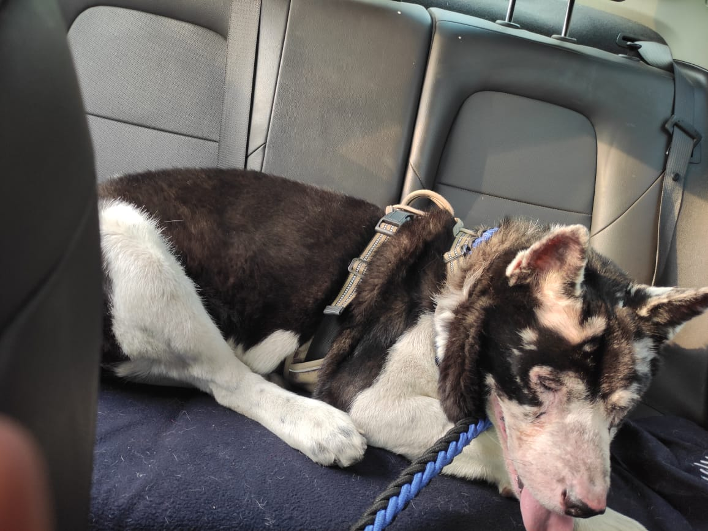
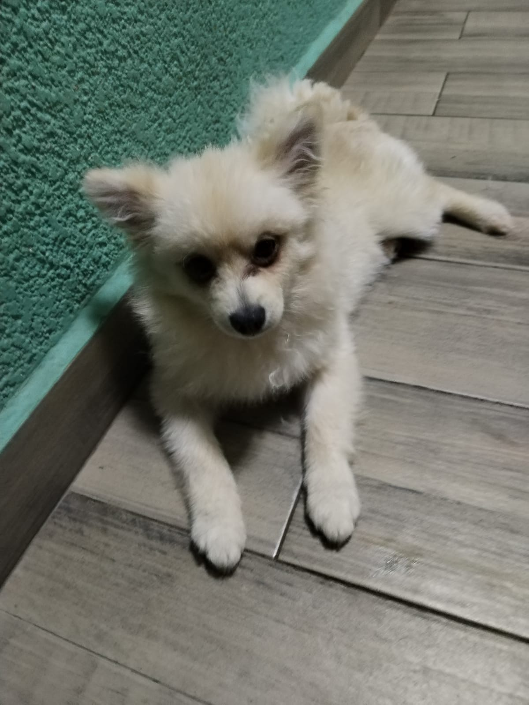
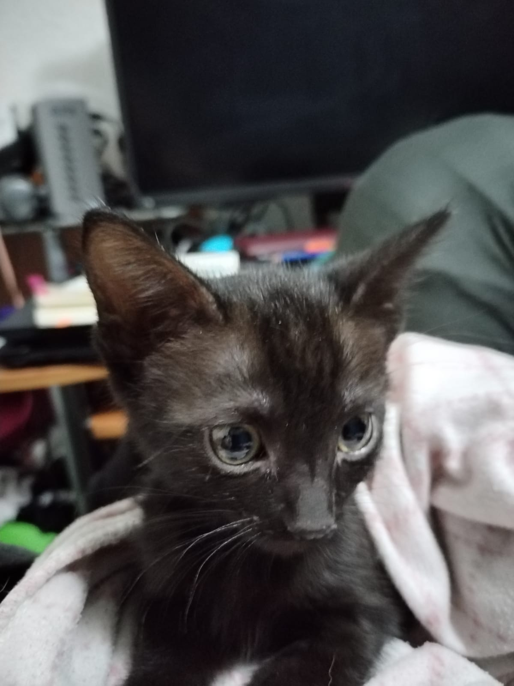
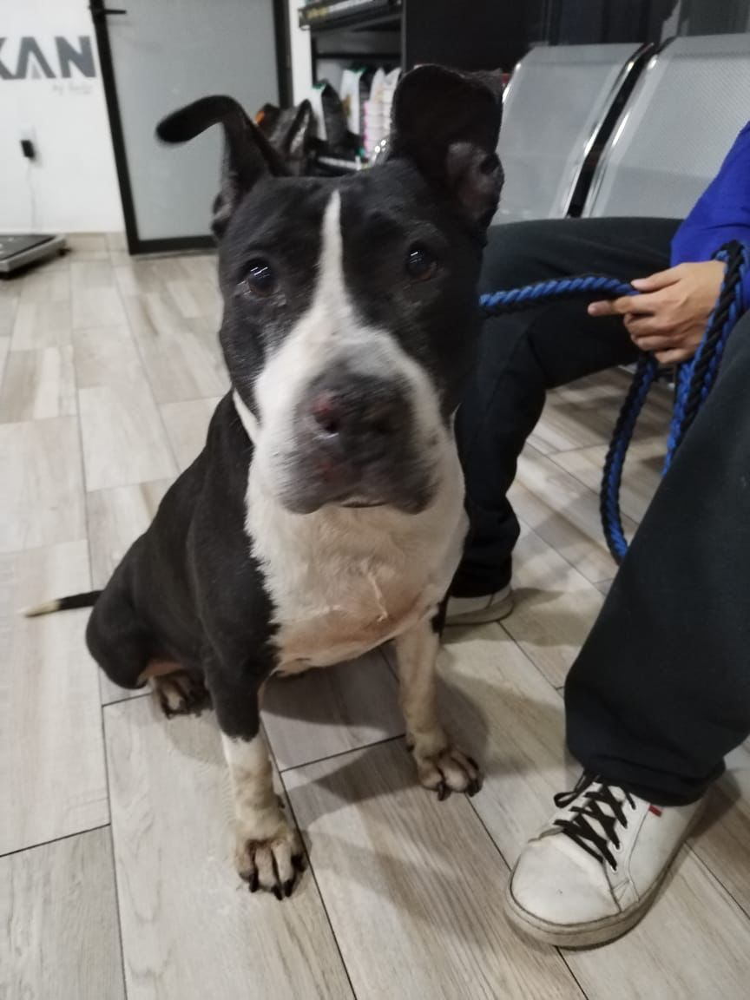

En esta página encontrarán información y fotos de todas mis mascotas y como fueron rescatadas y en qué situaciones. Todos nuestros perros tienen nombre de profesiones más un nombre al azar, más el nombre de un demonio mientras que los gatitos tienen como primer nombre uno de la realeza y el segundo es el nombre de un tipo de queso.
Ingeniero Behemoth Hércules
Licenciado Gumersindo Belzebuth
Princesa Mozzarella
Maestra Dolores Shiva
Conde Quesillo
Lista de ejemplo
Ejemplo 1
Ejemplo 2
Ejemplo 3
Ingeniero Behemoth Hércules
Ingeniero fue nuestro primer perrito rescatado, tiene 7 años, es un Akita Americano, se está quedando ciego por diversas infecciones que tenía en los ojos con las cuales llevaba meses sin tratar. Fue abandonado por su familia, abusado sexualmente y posteriormente abandonado a su suerte en el parque frente a mi casa donde por suerte lo encontramos, llevamos al veterinario y le dimos un hogar. Ahora es el perro más feliz de este mundo.

Mi perrito
Licenciado Gumersindo Belzebuth
Licenciado fue nuestro segundo perrito, actualmente tiene 8 meses y este fue comprado por mi esposo el cual me lo dió como regalo ya que me había encariñado mucho con una perrita Pomerania que tenía dueña y me dolió mucho por lo que mi esposo buscó un perrito igual a la perrita y me lo compró.

Mi perrito Licenciado
Princesa Mozzarella
Mi gatita es negra de ojos verdes, tiene 2 meses actualmente y fue rescatada de ser atropellada, mi papá me avisó que la había rescatado y que si le podía conseguir un hogar, sin embargo me encariñé demasiado con ella y actualmente es mía y me acompaña en todas mis clases de 7 am a 8 pm.

Mi gatita
Maestra Dolores Shiva
Esta perrita es una cruza de pitbul con de la calle, tambien fue abandonada en el parque, tiene la nariz destrozada y las patas con ampulas de quemaduras, desconocemos que fue lo que le pasó pero la rescatamos en la lluvia y terminé incluso enferma por ello. Es blanca con negro y es una perrita muy noble y agradecida.

Mi perrita
Conde Quesillo
Recordando a los caidos. Mi gatito Conde Quesillo lo tratamos de rescatar, sin embargo no sobrevivió más que 2 días con nosotros y falleció en el hospital en mis brazos. Estaba desnutrido y con diversas infecciones que al final le costaron la vida pero claro siempre vivirá en nuestros corazones.